전기공사기사 (2017-05-07 기출문제)
1과목: 전기응용 및 공사재료
1. 자기소호 기능이 가장 좋은 소자는?
- GTO
- SCR
- DIAC
- TRIAC
(정답률: 84%)

2. 철도 차량이 운행하는 곡선부의 종류가 아닌 것은?
- 단곡선
- 복곡선
- 반향곡선
- 완화 곡선
(정답률: 74%)
3. 공해 방지의 측면에서 대기 중에 부유하는 분진 입자를 포집하는 정화장치로 화력 발전소, 시멘트 공장, 용광로, 쓰레기 소각장 등에 널리 이용되는 것은?
- 정전기
- 정전 도장
- 전해 연마
- 전기 집진기
(정답률: 86%)
4. 금속의 표면 열처리에 이용하며 도체에 고주파 전류를 통하면 전류가 표면에 집중하는 현상은?
- 표피 효과
- 톰슨 효과
- 펀치 효과
- 제벡 효과
(정답률: 87%)
5. 겨울철에 심야 전력을 사용하여 20kWh 전열기로 40℃의 물 100ℓ를 95℃로 데우는데 사용되는 전기 요금은 약 얼마인가? (단, 가열장치의 효율 90%, 1kWh 당 단가는 겨울철 56.10원, 기타계절 37.90원이며, 계산 결과는 원단위 절삭한다.)
- 260원
- 290원
- 360원
- 390원
(정답률: 55%)
6. 열차 자체의 중량이 80 ton이고 동륜상의 중량이 55 ton인 기관차의 최대 견인력[kg]은?(단, 궤조의 점착 계수는 0.3으로 한다.)
- 15000
- 16500
- 18000
- 24000
(정답률: 74%)
7. 다음 그림은 UJT를 사용한 기본 이상 발진회로이다. RE의 역할을 설명한 내용 중 옳은 것은?
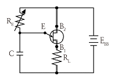
- 콘덴서(C)의 방전시간을 결정한다.
- B1과 B2에 걸리는 전압을 결정한다.
- 콘덴서(C)에 흐르는 과전류를 보호한다.
- 콘덴서(C)의 충전전류를 제어하여 펄스 주기를 조정한다.
(정답률: 63%)
8. 정격전압 100V, 평균 구면광도 100cd의 진공 텅스텐 전구를 97V로 점등한 경우의 광도는 몇 cd인가?
- 90
- 100
- 110
- 120
(정답률: 59%)
9. 1차 전지 중 휴대용 라디오, 손전등, 완구, 시계 등에 매우 광범위하게 이용되고 있는 건전지는?
- 망간 건전지
- 공기 건전지
- 수은 건전지
- 리튬 건전지
(정답률: 72%)
10. 플라이휠 효과 1kg ‧ m2 인 플라이휠 회전속도가 1500rpm에서 1200rpm으로 떨어졌다. 방출 에너지는 약 몇 J인가?
- 1.11×103
- 1.11×104
- 2.11×103
- 2.11×104
(정답률: 66%)
11. 저압 핀 애자의 종류가 아닌 것은?
- 저압 소형 핀 애자
- 저압 중형 핀 애자
- 저압 대형 핀 애자
- 저압 특대형 핀 애자
(정답률: 83%)
12. 동전선의 접속 방법이 아닌 것은?
- 교차 접속
- 직선 접속
- 분기 접속
- 종단 접속
(정답률: 65%)
13. 솔리드 케이블이 아닌 것은?
- H 케이블
- SL 케이블
- OF 케이블
- 벨트 케이블
(정답률: 64%)
14. 가선 전압에 의하여 정해지고 대지와 통신선 사이에 유도되는 것은?
- 전자 유도
- 정전 유도
- 자기 유도
- 전해 유도
(정답률: 70%)
15. 피뢰침용 인하도선으로 가장 적당한 전선은?
- 동선
- 고무 절연전선
- 비닐 절연전선
- 캡타이어 케이블
(정답률: 75%)
16. 배전반 및 분전반의 설치 장소로 적합하지 않은 곳은?
- 안정된 장소
- 노출되어 있지 않은 장소
- 개폐기를 쉽게 개폐할 수 있는 장소
- 전기회로를 쉽게 조작할 수 있는 장소
(정답률: 76%)
17. 가공전선로에서 22.9kV-Y 특고압 가공전선 2조를 수평으로 배열하기 위한 완금의 표준길이[mm]는?
- 1400
- 1800
- 2000
- 2400
(정답률: 74%)
18. 약호 중 계기용 변성기를 표시하는 것은?
- PF
- PT
- MOF
- ZCT
(정답률: 75%)
19. 일정한 전압을 가진 전지에 부하를 걸면 단자 전압이 저하되는 원인은?
- 주위 온도
- 분극 작용
- 이온화 경향
- 전해액의 변색
(정답률: 74%)
20. 무대 조명의 배치별 구분 중 무대 상부 배치 조명에 해당되는 것은?
- Foot light
- Tower light
- Ceiling Spot light
- Suspension Spot light
(정답률: 72%)
2과목: 전력공학
21. 동기조상기[A]와 전력용 콘덴서[B]를 비교한 것으로 옳은 것은?
- 시충전 : (A) 불가능, (B) 가능
- 전력 손실 : (A) 작다, (B) 크다
- 무효전력 조정 : (A) 계단적, (B) 연속적
- 무효전력 : (A) 진상·지상용, (B) 진상용
(정답률: 32%)
22. 어떤 공장의 소모 전력이 100kW이며, 이 부하의 역률이 0.6일 때, 역률을 0.9로 개선하기 위한 전력용 콘덴서의 용량은 약 몇 kVA인가?
- 75
- 80
- 85
- 90
(정답률: 30%)
23. 수력 발전소에서 사용되는 수차 중 15m 이하의 저낙차에 적합하여 조력 발전용으로 알맞은 수차는?
- 카플란 수차
- 펠톤 수차
- 프란시스 수차
- 튜블러 수차
(정답률: 23%)
24. 어떤 화력발전소에서 과열기 출구의 증기압이 169[kg/cm2]이다. 이것은 약 몇 atm 인가?
- 127.1
- 163.6
- 1650
- 12850
(정답률: 24%)
25. 가공 송전선로를 가선할 때에는 하중 조건과 온도 조건을 고려하여 적당한 이도(dip)를 주도록 하여야 한다. 이도에 대한 설명으로 옳은 것은?
- 이도의 대소는 지지물의 높이를 좌우한다.
- 전선을 가선할 때 전선을 팽팽하게 하는 것을 이도가 크다고 한다.
- 이도가 작으면 전선이 좌우로 크게 흔들려서 다른 상의 전선에 접촉하여 위험하게 된다.
- 이도가 작으면 이에 비례하여 전선의 장력이 증가되며, 너무 작으면 전선 상호간이 꼬이게 된다.
(정답률: 31%)
26. 승압기에 의하여 전압 Ve에서 Vh로 승압할 때, 2차 정격전압 e, 자기용량 W인 단상 승압기가 공급할 수 있는 부하 용량은?
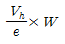
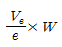
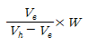
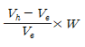
(정답률: 24%)
27. 일반적으로 부하의 역률을 저하시키는 원인은?
- 전등의 과부하
- 선로의 충전전류
- 유도 전동기의 경부하 운전
- 동기 전동기의 중부하 운전
(정답률: 28%)
28. 송전단 전압을 VS, 수전단 전압을 VT, 선로의 리액턴스를 X라 할 때, 정상 시의 최대 송전전력의 개략적인 값은?
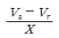
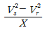
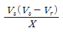
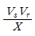
(정답률: 31%)
29. 가공지선의 설치 목적이 아닌 것은?
- 전압 강하의 방지
- 직격뢰에 대한 차폐
- 유도뢰에 대한 정전차폐
- 통신선에 대한 전자유도 장해 경감
(정답률: 29%)
30. 피뢰기가 방전을 개시할 때의 단자 전압의 순시값을 방전 개시 전압이라 한다. 방전 중의 단자 전압의 파고값을 무엇이라 하는가?
- 속류
- 제한 전압
- 기준충격 절연강도
- 상용주파 허용 단자 전압
(정답률: 28%)
31. 송전 계통의 한 부분이 그림과 같이 3상 변압기로 1차측은 △로, 2차측은 Y로 중성점이 접지되어 있을 경우, 1차측에 흐르는 영상전류는?
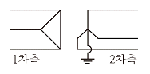
- 1차측 선로에서 ∞이다.
- 1차측 선로에서 반드시 0이다.
- 1차측 변압기 내부에서는 반드시 0이다.
- 1차측 변압기 내부와 1차측 선로에서 반드시 0이다.
(정답률: 25%)
32. 배전선로에 관한 설명으로 틀린 것은?
- 밸런서는 단상 2선식에 필요하다.
- 저압 뱅킹 방식은 전압 변동을 경감할 수 있다.
- 배전선로의 부하율이 F일 때 손실계수는 F와 F2의 사이의 값이다.
- 수용률이란 최대수용전력을 설비 용량으로 나눈 값을 퍼센트로 나타낸다.
(정답률: 31%)
33. 수차 발전기에 제동권선을 설치하는 주된 목적은?
- 정지시간 단축
- 회전력의 증가
- 과부하 내량의 증대
- 발전기의 안정도 증진
(정답률: 30%)
34. 3상 3선식 가공성전선로에서 한 선의 저항은 15Ω, 리액턴스는 20Ω이고, 수전단 선간전압은 30kV, 부하역률은 0.8(뒤짐)이다. 전압강하율을 10%라 하면, 이 송전선로는 몇 kW까지 수전할 수 있는가?
- 2500
- 3000
- 3500
- 4000
(정답률: 25%)
35. 송전선로에서 사용하는 변압기 결선에 △결선이 포함되어 있는 이유는?
- 직류분의 제거
- 제 3고조파의 제거
- 제 5고조파의 제거
- 제 7고조파의 제거
(정답률: 31%)
36. 교류 송전 방식과 비교하여 직류 송전 방식의 설명이 아닌 것은?
- 전압 변동률이 양호하고 무효전력에 기인하는 전력 손실이 생기지 않는다.
- 안정도의 한계가 없으므로 송전용량을 높일 수 있다.
- 전력 변환기에서 고조파가 발생한다.
- 고전압, 대전류의 차단이 용이하다.
(정답률: 22%)
37. 전압 66000V, 주파수 60Hz, 길이 15km, 심선 1선당 작용 정전용량 0.3587㎌/㎞인 한 선당 지중 전선로의 3상 무부하 충전전류는 약 몇 A인가? (단, 정전용량 이외의 선로정수는 무시한다.)
- 62.5
- 68.2
- 73.6
- 77.3
(정답률: 28%)
38. 전력계통에서 사용되고 있는 GCB(Gas Circuit Breaker)용 가스는?
- N2가스
- SF6가스
- 알곤 가스
- 네온 가스
(정답률: 35%)
39. 차단기와 아크 소호원리가 바르지 않은 것은?
- OCB : 절연유에 분해 가스 흡부력 이용
- VCB : 공기 중 냉각에 의한 아크 소호
- ABB : 압축 공기를 아크에 불어 넣어서 차단
- MBB : 전자력을 이용하여 아크를 소호실내로 유도하여 냉각
(정답률: 33%)
40. 네트워크 배전 방식의 설명으로 옳지 않은 것은?
- 전압 변동이 적다.
- 배전 신뢰도가 높다.
- 전력손실이 감소한다.
- 인축의 접촉사고가 적어진다.
(정답률: 36%)
3과목: 전기기기
41. 정류회로에 사용되는 환류다이오드(free wheeling diode)에 대한 설명으로 틀린 것은?
- 순저항 부하의 경우 불필요하게 된다.
- 유도성 부하의 경우 불필요하게 된다.
- 환류 다이오드 동작 시 부하출력 전압은 약 0V가 된다.
- 유도성 부하의 경우 부하전류의 평활화에 유용하다.
(정답률: 22%)
42. 3상 변압기를 병렬운전하는 경우 불가능한 조합은?
- △-Y 와 Y-△
- △-△ 와 Y-Y
- △-Y 와 △-Y
- △-Y 와 △-△
(정답률: 32%)
43. 3상 직권 정류자 전동기에 중간(직렬)변압기가 쓰이고 있는 이유가 아닌 것은?
- 정류자 전압의 조정
- 회전자 상수의 감소
- 실효 권수비 선정 조정
- 경부하 때 속도의 이상 상승 방지
(정답률: 24%)
44. 직류 분권 전동기를 무부하로 운전 중 계자 회로에 단선이 생긴 경우 발생하는 현상으로 옳은 것은?
- 역전한다.
- 즉시 정지한다.
- 과속도로 되어 위험하다.
- 무부하이므로 서서히 정지한다.
(정답률: 27%)
45. 변압기에 있어서 부하와는 관계없이 자속만을 발생시키는 전류는?
- 1차 전류
- 자화 전류
- 여자 전류
- 철손 전류
(정답률: 28%)
46. 직류 전동기의 규약 효율을 나타낸 식으로 옳은 것은?
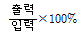
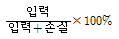
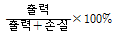
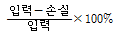
(정답률: 28%)
47. 직류 전동기에서 정속도 전동기라고 볼 수 있는 전동기는?
- 직권 전동기
- 타여자 전동기
- 화동 복권 전동기
- 차동 복권 전동기
(정답률: 25%)
48. 단상 유도전동기의 기동 방법 중 기동 토크가 가장 큰 것은?
- 반발 기동형
- 분상 기동형
- 세이딩 코일형
- 콘덴서 분상 기동형
(정답률: 34%)
49. 부흐홀츠 계전기에 대한 설명으로 틀린 것은?
- 오동작의 가능성이 많다.
- 전기적 신호로 동작한다.
- 변압기의 보호에 사용된다.
- 변압기의 주탱크와 콘서베이터를 연결하는 관중에 설치한다.
(정답률: 23%)
50. 직류기에서 정류코일의 자기 인덕턴스를 L이라 할 때 정류코일의 전류가 정류주기 TC 사이에 IC에서 -IC로 변한다면 정류 코일의 리액턴스 전압[V]의 평균값은?
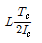
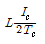
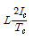
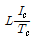
(정답률: 29%)
51. 일반적인 전동기에 비하여 리니어 전동기의 장점이 아닌 것은?
- 구조가 간단하여 신뢰성이 높다.
- 마찰을 거치지 않고 추진력이 얻어진다.
- 원심력에 의한 가속제한이 없고 고속을 쉽게 얻을 수 있다.
- 기어, 벨트 등 동력 변환기구가 필요 없고 직접 원운동이 얻어진다.
(정답률: 26%)
52. 직류를 다른 전압의 직류로 변환하는 전력변환 기기는?
- 초퍼
- 인버터
- 사이클로 컨버터
- 브리지형 인버터
(정답률: 28%)
53. 와전류 손실을 패러데이 법칙으로 설명한 과정 중 틀린 것은?
- 와전류가 철심으로 흘러 발열
- 유기전압 발생으로 철심에 와전류가 흐름
- 시변 자속으로 강자성체 철심에 유기전압 발생
- 와전류 에너지 손실량은 전류 경로 크기에 반비례
(정답률: 26%)
54. 주파수가 정격보다 3% 감소하고 동시에 전압이 정격보다 3% 상승된 전원에서 운전되는 변압기가 있다. 철손이
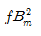
에 비례한다면 이 변압기 철손은 정격 상태에 비하여 어떻게 달라지는가?(단, f : 주파수, Bm : 자속밀도 최대치이다.)- 약 8.7% 증가
- 약 8.7% 감소
- 약 9.4% 증가
- 약 9.4% 감소
(정답률: 23%)
55. 교류정류자기에서 갭의 자속분포가 정현파로 øm=0.14Wb, P=2, a=1, Z=200, n=1200rpm인 경우 브러시 축이 자극축과 30°라면, 속도 기전력의 실효값 Es는 약 몇 V인가?
- 160
- 400
- 560
- 800
(정답률: 16%)
56. 역률 0.85의 부하 350kW에 50kW를 소비하는 동기 전동기를 병렬로 접속하여 합성 부하의 역률을 0.95로 개선하려면 진상 무효 전력은 약 몇 kVar인가?
- 68
- 72
- 80
- 85
(정답률: 19%)
57. 변압기의 무부하시험, 단락시험에서 구할 수 없는 것은?
- 철손
- 동손
- 절연 내력
- 전압 변동률
(정답률: 25%)
58. 3상 동기 발전기의 단락곡선이 직선으로 되는 이유는?
- 전기자 반작용으로
- 무부하 상태이므로
- 자기 포화가 있으므로
- 누설 리액턴스가 크므로
(정답률: 25%)
59. 정격출력 5000kVA, 정격전압 3.3kV, 동기 임피던스가 매상 1.8Ω인 3상 동기 발전기의 단락비는 약 얼마인가?
- 1.1
- 1.2
- 1.3
- 1.4
(정답률: 26%)
60. 동기기의 회전자에 의한 분류가 아닌 것은?
- 원통형
- 유도자형
- 회전 계자형
- 회전 전기자형
(정답률: 25%)
4과목: 회로이론 및 제어공학
61. 기준 입력과 주궤환량과의 차로서, 제어계의 동작을 일으키는 원인이 되는 신호는?
- 조작 신호
- 동작 신호
- 주궤환 신호
- 기준 입력 신호
(정답률: 28%)
62. 폐루프 전달함수 C(s)/R(s)가 다음과 같은 2차 제어계에 대한 설명 중 틀린 것은?
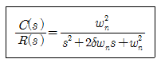
- 최대 오버슈트는
 이다.
이다. - 이 폐루프계의 특성 방정식은
 이다.
이다. - 이 계는 δ=0.1일 때 부족 제동된 상태에 있게 된다.
- δ값을 작게 할수록 제동은 많이 걸리게 되니 비교 안정도는 향상된다.
(정답률: 26%)
63. 3차인 이산치 시스템의 특성 방정식의 근이 –0.3, -0.2, +0.5로 주어져 있다. 이 시스템의 안정도는?
- 이 시스템은 안정한 시스템이다.
- 이 시스템은 불안정한 시스템이다.
- 이 시스템은 임계 안정한 시스템이다.
- 위 정보로서는 이 시스템의 안정도를 알 수 없다.
(정답률: 19%)
64. 다음의 특성 방정식을 Routh-Hurwitz 방법으로 안정도를 판별하고자 한다. 이때 안정도를 판별하기 위하여 가장 잘 해석한 것은 어느 것인가?
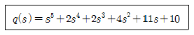
- s 평면의 우반면에 근은 없으나 불안정하다.
- s 평면의 우반면에 근이 1개 존재하여 불안정하다.
- s 평면의 우반면에 근이 2개 존재하여 불안정하다.
- s 평면의 우반면에 근이 3개 존재하여 불안정하다.
(정답률: 25%)
65. 전달함수
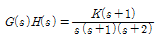
일 때 근궤적의 수는?- 1
- 2
- 3
- 4
(정답률: 29%)
66. 다음의 미분 방정식을 신호 흐름 선도에 옳게 나타낸 것은?(단,
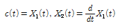
로 표시한다.)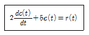
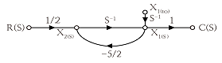
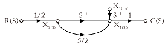
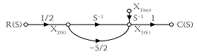
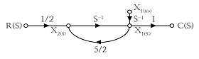
(정답률: 17%)
67. 다음 블록선도의 전체 전달함수가 1이 되기 위한 조건은?
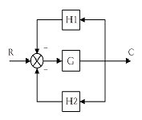
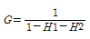
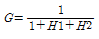
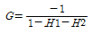
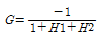
(정답률: 19%)
68. 특성 방정식의 모든 근이 s 복소평면의 좌반면에 있으면 이 계는 어떠한가?
- 안정
- 준안정
- 불안정
- 조건부 안정
(정답률: 32%)
69. 그림의 회로는 어느 게이트(gate)에 해당되는가?
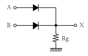
- OR
- AND
- NOT
- NOR
(정답률: 27%)
70. 전달함수가
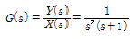
로 주어진 시스템의 단위 임펄스 응답은?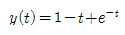
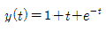
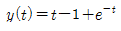
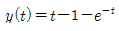
(정답률: 15%)
71. 다음과 같은 회로망에서 영상파라미터(영상전달정수) θ는?
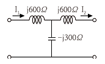
- 10
- 2
- 1
- 0
(정답률: 18%)
72. △결선된 대칭 3상 부하가 있다. 역률이 0.8(지상)이고 소비전력이 1800W이다. 선로의 저항 0.5Ω에서 발생하는 선로 손실이 50W이면 부하단자 전압[V]은?
- 627
- 525
- 326
- 225
(정답률: 18%)
73. E=40+j30[V]의 전압을 가하면 i=30+j10[A]의 전류가 흐르는 회로의 역률은?
- 0.949
- 0.831
- 0.764
- 0.651
(정답률: 20%)
74. 그림과 같은 회로에서 스위치 S를 닫았을 때, 과도분을 포함하지 않기 위한 R[Ω]은?
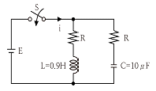
- 100
- 200
- 300
- 400
(정답률: 23%)
75. 분포정수 회로에서 직렬 임피던스를 Z, 병렬 어드미턴스를 Y라 할 때, 선로의 특성임피던스 Z0는?
- ZY
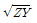
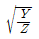
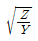
(정답률: 28%)
76. 다음과 같은 회로의 공진시 어드미턴스는?
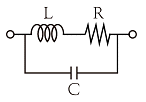
- RL/C
- RC/L
- L/RC
- R/LC
(정답률: 19%)
77. 그림과 같은 회로에서 전류 I[A]는?
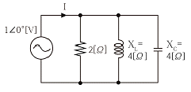
- 0.2
- 0.5
- 0.7
- 0.9
(정답률: 24%)
78.
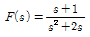
로 주어졌을 때 F(s)의 역변환은?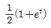
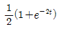
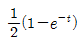
(정답률: 21%)
79. 인 전압을 R-L 직렬 회로에 가할 때 제 5고조파 전류의 실효값은 약 몇 [A]인가?(단, R=12Ω,wl=1Ω 이다.)
- 10
- 15
- 20
- 25
(정답률: 29%)
80. 그림과 같은 파형의 전압 순시값은?
(정답률: 22%)
5과목: 전기설비기술기준 및 판단기준
81. 가공전선로의 지지물에 시설하는 지선에 관한 사항으로 옳은 것은?
- 소선은 지름 2.0mm 이상인 금속선을 사용한다.
- 도로를 횡단하여 시설하는 지선의 높이는 지표상 6.0m 이상이다.
- 지선의 안전율은 1.2 이상이고 허용 인장하중의 최저는 4.31kN으로 한다.
- 지선에 연선을 사용할 경우에는 소선은 3가닥 이상의 연선을 사용한다.
(정답률: 30%)
82. 옥내배선의 사용 전압이 400V 미만일 때 전광표시 장치 · 출퇴 표시등 기타이와 유사한 장치 또는 제어회로 등의 배선에 다심 케이블을 시설하는 경우 배선의 단면적은 몇 mm2이상인가?
- 0.75
- 1.5
- 1
- 2.5
(정답률: 25%)
83. 154kV 가공 송전선로를 제1종 특고압 보안공사로 할 때 사용되는 경동연선의 굵기는 몇 mm2이상인가?
- 100
- 150
- 200
- 250
(정답률: 26%)
84. 일반적으로 저압 옥내 간선에서 분기하여 전기사용기계기구에 이르는 저압 옥내 전로는 저압 옥내간선과의 분기점에서 전선의 길이가 몇 m 이하인 곳에 개폐기 및 과전류 차단기를 시설하여야 하는가?
- 0.5
- 1.0
- 2.0
- 3.0
(정답률: 23%)
85. 전동기 과부하 보호 장치의 시설에서 전원측 전로에 시설한 배선용 차단기의 정격 전류가 몇 A 이하의 것이면 이 전로에 접속하는 단상 전동기에는 과부하 보호 장치를 생략할 수 있는가?
- 15
- 20
- 30
- 50
(정답률: 21%)
86. 사용전압이 35kV 이하인 특고압 가공전선과 가공 약전류 전선 등을 동일 지지물에 시설하는 경우, 특고압 가공전선로는 어떤 종류의 보안 공사로 하여야 하는가?
- 고압 보안공사
- 제1종 특고압 보안공사
- 제2종 특고압 보안공사
- 제3종 특고압 보안공사
(정답률: 21%)
87. 사용전압이 고압인 전로의 전선으로 사용할 수 없는 케이블은?(오류 신고가 접수된 문제입니다. 반드시 정답과 해설을 확인하시기 바랍니다.)
- MI 케이블
- 연피 케이블
- 비닐외장 케이블
- 폴리에틸렌 외장 케이블
(정답률: 24%)
88. 가로등, 경기장, 공장, 아파트 단지 등의 일반 조명을 위하여 시설하는 고압 방전등은 그 효율이 몇 lm/W이상의 것이어야 하는가?(오류 신고가 접수된 문제입니다. 반드시 정답과 해설을 확인하시기 바랍니다.)
- 30
- 50
- 70
- 100
(정답률: 30%)
89. 제1종 접지공사의 접지선의 굵기는 공칭단면적 몇 mm2 이상의 연동선이어야 하는가?(오류 신고가 접수된 문제입니다. 반드시 정답과 해설을 확인하시기 바랍니다.)
- 2.5
- 4.0
- 6.0
- 8.0
(정답률: 27%)
90. 금속관 공사에서 절연부싱을 사용하는 가장 주된 목적은?
- 관의 끝이 터지는 것을 방지
- 관내 해충 및 이물질 출입 방지
- 관의 단구에서 조영재의 접촉 방지
- 관의 단구에서 전선 피복의 손상 방지
(정답률: 32%)
91. 최대 사용전압이 3.3kV인 차단기 전로의 절연내력 시험전압은 몇 V인가?
- 3036
- 4125
- 4950
- 6600
(정답률: 27%)
92. 관·암거·기타 지중전선을 넣은 방호장치의 금속제부분(케이블을 지지하는 금구류는 제외한다.) 및 지중전선의 피복으로 사용하는 금속체에는 몇 종 접지공사를 하여야 하는가?(관련 규정 개정전 문제로 여기서는 기존 정답인 3번을 누르면 정답 처리됩니다. 자세한 내용은 해설을 참고하세요.)
- 제1종 접지공사
- 제2종 접지공사
- 제3종 접지공사
- 특별 제3종 접지공사
(정답률: 27%)
93. 가반형(이동형)의 용접전극을 사용하는 아크 용접장치를 시설할 때 용접 변압기의 1차측 전로의 대지전압은 몇 V 이하이어야 하는가?
- 200
- 250
- 300
- 600
(정답률: 34%)
94. 지중전선로를 직접 매설식에 의하여 차량 기타 중량물의 압력을 받을 우려가 있는 장소에 시설할 경우에는 그 매설 깊이를 최소 몇 m 이상으로 하여야 하는가?(KEC 2021년 개정 규정 적용)
- 1
- 1.2
- 1.5
- 1.8
(정답률: 29%)
95. 사용전압이 22.9kV인 특고압 가공전선과 그 지지물·완금류·지주 또는 지선 사이의 이격거리는 몇 cm 이상이어야 하는가?
- 15
- 20
- 25
- 30
(정답률: 16%)
96. 건조한 장소로서 전개된 장소에 고압 옥내배선을 시설할 수 있는 공사방법은?
- 덕트 공사
- 금속관 공사
- 애자사용 공사
- 합성 수지관 공사
(정답률: 28%)
97. 제3종 접지공사를 하여야 할 곳은?(오류 신고가 접수된 문제입니다. 반드시 정답과 해설을 확인하시기 바랍니다.)
- 고압용 변압기의 외함
- 고압의 계기용 변성기의 2차측 전로
- 특고압 계기용 변성기의 2차측 전로
- 특고압과 고압의 혼촉방지를 위한 방전장치
(정답률: 22%)
98. 전기철도에서 배류시설에 강제 배류기를 사용할 경우 시설방법에 대한 설명으로 틀린 것은?(오류 신고가 접수된 문제입니다. 반드시 정답과 해설을 확인하시기 바랍니다.)
- 강제 배류기용 전원장치의 변압기는 절연 변압기일 것
- 강제 배류기를 보호하기 위하여 적정한 과전류 차단기를 시설할 것
- 귀선에서 강제 배류기를 거쳐 금속제 지중 관로로 통하는 전류를 저지하는 구조로 할 것
- 강제 배류기는 제2종 접지공사를 한 금속제 외함 기타 견고한 함에 넣어 시설하거나 사람이 접촉할 우려가 없도록 시설할 것
(정답률: 21%)
99. 고압 가공전선에 케이블을 사용하는 경우 케이블을 조가용선에 행거로 시설하고자 할 때 행거의 간격은 몇 cm 이하로 하여야 하는가?
- 30
- 50
- 80
- 100
(정답률: 25%)
100. 고압 가공전선로의 지지물에 시설하는 통신선의 높이는 도로를 횡단하는 경우 교통에 지장을 줄 우려가 없다면 지표상 몇 m까지로 감할 수 있는가?
- 4
- 4.5
- 5
- 6
(정답률: 21%)